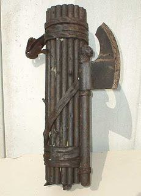

Idade Média é o nome do período da história compreendido entre os anos 476 e 1453. Esse termo engloba quatro idades (Antiga, Média, Moderna e Contemporânea).
Em geral, a Idade Média está bastante relacionada à Europa, de forma direta ou indireta. Por isso, o resumo sobre Idade Média para o Enem falará muito sobre essa região, tá joia?
O que aconteceu na Idade Média? Como ela teve início?
A Idade Média teve início com a desagregação do Império Romano do Ocidente, no século V. Com isso, teve início uma mistura da cultura latina, oriunda dos romanos, e da cultura germânica, vinda dos povos que invadiram e se instalaram nas terras que pertenciam a Roma, na Europa Ocidental.
Alguns pontos importantes desse momento são:
Processo de ruralização que a Europa viveu entre os séculos V e X;
Fortalecimento da Igreja Católica;
Estruturação do sistema feudal, tanto econômica quanto política e socialmente.
O início da Idade Média aconteceu no ano 476. Seu marco principal foi a destituição de Rômulo Augusto do trono romano.
Historiadores dividem a Idade Média em duas fases:
Alta Idade Média:
Século V ao século X; e
Baixa Idade Média: século XI ao século XV.
O termo “Idade Média” também pode ser sinônimo de “Idade das Trevas”, em referência a Francesco Petrarca, que, no século XVI, chamava o período de “tenebrae”.
Baixa Idade Média:
O período conhecido como Baixa Idade Média foi marcado pela crise do sistema feudal. Houve mudanças econômicas, religiosas, políticas e culturais, com destaque para o crescimento dos burgos.
Uma grande crise assolou a Europa neste momento, atingindo seu ápice no século XIV. A peste negra, a fome e as guerras levaram a um processo de centralização política, que levou ao declínio do feudalismo e à centralização política com a Formação dos Estados Nacionais.
Alta Idade Média:
A Alta Idade Média durou entre os séculos V e X e teve início após a Queda do Império Romano do Ocidente, que marcou o fim do Mundo Clássico.
Sua principal característica era o modo de produção feudal, com poder descentralizado e foco na subsistência de cada um dos feudos. Havia, ainda, o trabalho servil e o fortalecimento do teocentrismo (Deus no centro de tudo) com a Igreja Católica.
Idade Média e Feudalismo
O feudalismo é um termo que nomeia toda organização social, política, cultural, ideológica e econômica que existiu na Europa durante a Idade Média.
Esse conceito explicou a estrutura da sociedade da Europa Ocidental e existiu entre os séculos XI e XIII. Dos séculos V ao X, o feudalismo estava em processo de estruturação, com a ruralização na Europa se estabelecendo.
Do século XI ao século XIII, o feudalismo estava no seu auge, sobretudo em regiões que hoje correspondem à Alemanha, à França, e ao norte da Itália e da Inglaterra. O mesmo sistema feudal entra em decadência a partir do século XIV, com a urbanização da Europa.
O feudalismo se baseava na produção agrícola e na exploração servil dos camponeses. Havia uma dependência entre o senhor feudal e o camponês, que era sujeito a uma série de tributos a serem pagos (corveia, talha e banalidade).
No âmbito religioso, a Igreja Católica era dona de grande influência. Para ela, os servos cumpriam seu papel por uma designação divina.
Havia, de maneira resumida, três classes sociais à época:
Nobreza (bellatores): classe privilegiada, detentora de terras, que devia proteger a sociedade;
Clero (oratores): membros da Igreja Católica que cumpriam funções religiosas. Detinham riqueza, poder e terras;
Camponeses (laboratores): grupo empobrecido que sustentava a sociedade feudal por meio de seu trabalho e dos impostos que pagava.
A vassalagem era uma das grandes manifestações do feudalismo e surgiu por volta do século VIII. Ela estabelecia que o rei (suserano) e os nobres (vassalos) tivessem laços de fidelidade entre si. Os vassalos recebiam um feudo (terra) e tinham como obrigação auxiliar o seu suserano na execução da justiça, na administração do reino e na guerra, se necessário.
Principais acontecimentos da Idade Média
A Idade Média foi muito longa e, por isso mesmo, impactada por diferentes acontecimentos importantes.
Alguns exemplos são:
Surgimento do islamismo no século VII, que marcou o rompimento do Ocidente com o Oriente. O avanço muçulmano na Europa só foi interrompido por Carlos Martel, em 732.
A Inquisição, um dos eventos mais importantes da Idade Média, que perseguia e matava quem não seguia a doutrina da Igreja.
As Cruzadas ocorreram do século XI ao século XII e mobilizaram tropas cristãs contra os muçulmanos, na Palestina e no norte da África. Foram nove cruzadas, sendo que a primeira foi convocada em 1095 e a última aconteceu em 1272.
Cultura e ciência medievais também são grandes legados desse período.
Transição da Idade Média para a Moderna
A transição da Idade Média para a Idade Moderna foi marcada por inúmeras mudanças na Europa. As principais são a intensificação do comércio, o desenvolvimento das cidades e o empoderamento da burguesia. Clero e nobreza perderam prestígio.
Como termina a Idade Média?
O fim da Idade Média está relacionado ao renascimento urbano e comercial que a Europa experimentou a partir do século XI.
Surgiram novas técnicas agrícolas, aumento na produção de alimentos e maior circulação da moeda. Com o aumento da população, as pessoas que se mudaram para as cidades (êxodo rural) eram cada vez mais numerosas, o que elevou também a quantidade de comerciantes.
O século XIV demarca a fronteira final da Idade Média. Este foi um século de crise, caracterizado por guerras que causaram destruição e geraram mais fome, e isso resultou na Peste Negra, surto de peste bubônica responsável pela morte de 1/3 da população europeia.
Revoltas, fome e crescimento urbano deram fim ao isolamento feudal, resultando no mercantilismo. Começa, então, a exploração do Oceano Atlântico, abrindo novas fronteiras e consolidando o fim da Idade Média.
Revolução industrial
O que foi a Revolução Industrial?
Tudo começa com a Terra da Rainha (oh, Lord!) – a Inglaterra. Isso porque ela foi pioneira em uma série de aspectos na indústria e, por isso mesmo, transformou-se em grande potência mundial, liderando geral.
Entre as razões para que isso acontecesse estava a invenção da máquina a vapor, essencial para o boom industrial. A partir daí, o crescimento observado no país foi exponencial e a Inglaterra passou a “abrir as asinhas” e tentar dominar outros territórios com seu conhecimento.
Tudo isso só foi possível graças a dois fatores: a chegada da burguesia inglesa ao poder político no século XVII e a adoção, pelo Estado, de várias medidas para beneficiar o desenvolvimento industrial.
O negócio é o seguinte: por séculos, os ingleses ficaram acumulando riquezas com o comércio industrial, tráfico de escravos, cercamento de terras e corso, que era a concessão de autorizações dadas por nações beligerantes, no caso a Inglaterra, para que navios da marinha mercante se armassem e praticassem atos de guerra (saques a navios de outros países que transportavam itens valiosos – vulgo pirataria mesmo!).
Relação entre burguesia e operários na Revolução Industrial:
A relação entre os pólos trabalho x capital sempre dava vantagens à burguesia, que conquistou poderes por conta das revoluções do século XVII. Ela conseguiu benefícios no Parlamento, limitando a participação da aristocracia e da realeza.
Por outro lado, com as fábricas construídas graças ao cercamento de terras para a burguesia, várias famílias de camponeses foram expulsas, expandindo latifúndios e trazendo os operários para encherem as fábricas nas cidades.
Sobre as condições de trabalho desses operários, você deve imaginar que não eram as melhores. Basicamente, eles sofriam com:
Condições precárias;
Alta carga horária;
Remuneração irrisória;
Ausência de direitos garantidos por lei
Neste cenário turbulento, surgiram dois movimentos de revolta operária: o cartismo e o ludismo.
Os Luditas, como ato de protesto, invadiam as fábricas para destruir equipamentos. Eram conhecidos como “quebradores de máquinas”. Já os Cartistas tentavam conseguir direitos pela política, com as “Cartas do Povo”.
Como aconteceu a expansão da Revolução Inglesa?
como aconteceu a expansão da Revolução em três fases:
– Meados do século XVIII, início do XIX: a Inglaterra estende seu domínio até a França, tendo o carvão como principal combustível;
– Final do século XIX: máquinas foram para o resto da Europa, Estados Unidos e Japão, tendo o petróleo principal combustível (motores a combustão). Neocolonialismo, imperialismo e o domínio de potências só foram possíveis com a ascensão econômica e militar trazida por esta fase da Revolução.
– Final do século XX: depois da 2ª Guerra Mundial, marcou a expansão da revolução, com a chegada de tecnologias em massa até hoje presentes no mundo.
Foi exatamente nesta época que surgiram os métodos de produção mais eficientes, produzindo mais em menos tempo, com maior qualidade, mercadorias mais baratas e estímulo ao consumo.
Todo esse processo aumentou o crescimento desordenado das cidades e a poluição ambiental no mundo inteiro, ameaçando o futuro da vida na Terra, mas isso é assunto pra outra discussão, galhere!
Primeira e Segunda Guerra Mundial
A Primeira Guerra Mundial, também chamada de Grande Guerra, reuniu diversos países, de vários continentes. Ela é cobrada com frequência no Enem, então, é super importante saber tudo sobre o assunto. Quer resumo sobre Primeira Guerra para o Enem? Então bora lá!
Liderada por dois blocos que se enfrentaram, a Primeira Guerra Mundial contou com a Tríplice Aliança, composta por Alemanha, Áustria e Itália e a Tríplice Entente formada por França, Inglaterra e Rússia.
Essa galera botou pra quebrar entre 1914 e 1918 e o resultado foram grandes perdas e envolvimento de outros países, incluindo o Brasil.
Dá uma olhada no resumo sobre a Primeira Guerra Mundial do Descomplica e se prepare para fazer bonito no exame!
Primeira Guerra Mundial:
Com duração de 1914 a 1918, a Primeira Guerra Mundial foi um conflito político e militar, que envolveu as principais potências econômicas do início do século XX. Seu saldo foi terrível, com mais de 10 milhões de mortos, entre militares e civis.
As causas da Primeira Guerra Mundial são diversas. Entre as principais motivações para o desencadeamento da guerra estão a divisão mundial percebida ao longo dos séculos XIX e XX.
Geral estava descontente com a exploração do mundo feita pelas grandes potências europeias e pelos Estados Unidos.
Os cinco continentes tinham dominação imperialista e as grandes potências brigavam para expandir seus territórios – e isso gerou uma grande disputa por poder, inicialmente travada entre Alemanha e Inglaterra.
Depois, os alemães arrumaram confusão com a França, depois de conquistarem a Alsácia-Lorena.
Cheios de inimigos, os alemães promoveram uma tensão entre as nações europeias, que foram convencidas a se rebelar contra esse domínio.
Como se não bastassem esses conflitos, do lado oriental do continente, a Rússia, governada por um Cezar (imperador), tinha interesses em estender seu território na região dos Bálcãs. O problema é que o Império Austro-Húngaro pretendia a mesma coisa.
O lance, resumidamente, é que havia faíscas por todos os lados.
Geral estava super incomodado e queria mais poder pra si, então, os europeus foram ligeiros e começaram a criar alianças para que houvesse apoio para caso uma das partes fossem atacadas. Havia acordos políticos, militares e financeiros secretos.
As alianças foram as seguintes:
Tríplice Aliança: formada em 1882 por Itália, Império Austro-Húngaro e Alemanha (mais tarde, a Itália entra para a Tríplice Entente). Tríplice Entente: formada em 1907 por Rússia, Grã-Bretanha e França.
Qual foi o estopim para a Primeira Guerra Mundial?
A situação crítica fez com que a Europa se transformasse em um barril de pólvora. O caldo entornou quando o arquiduque Francisco Ferdinando, herdeiro do trono austríaco, resolveu visitar Sarajevo, capital da Bósnia.
Enquanto ele desfilava em carro aberto pelas ruas de Sarajevo, um terrorista da organização mão-negra disparou contra Ferdinando. Aí acabou tudo!
A Áustria, então, acusou a Sérvia de estar envolvida no atentado e a troca de insultos culminou na troca de tiros em 1914. A partir daí, a Rússia declarou guerra à Áustria; Alemanha declarou Guerra à Rússia e França e Inglaterra entraram no conflito logo em seguida.
A Itália tinha recebido a promessa de obter territórios que estavam dominados pela Áustria e, por isso, entrou para o lado da Tríplice Entente.
Nesse momento, a coisa já tinha azedado. Os próximos passos, então, dividiram-se em três fases: Guerra de Movimento (1914), Guerra de Trincheiras (1915 – 1917) e Segunda Guerra de Movimento ou Fase Final (1918).
As fases da Primeira Guerra Mundial, resumidamente, foram assim:
Guerra de Movimento: nos primeiros meses do conflito, as tropas tiveram como estratégia a movimentação e a ocupação dos fronts. Os alemães se movimentaram rapidamente e chegaram a Paris rapidamente.
Guerra de Trincheiras: a segunda fase tinha como estratégia tentar conservar as posições dos fronts sem perder território para os inimigos. Este foi o período mais sangrento da batalha e os conflitos aconteciam, quase sempre, nas áreas rurais.
Segunda Guerra de Movimento: esta fase foi marcada pela entrada de novas armas e um contingente grande de soldados enviados pelos Estados Unidos para o bloco da Entente. Em 1917, devido a um processo revolucionário (a Revolução Russa), a Rússia deixou a guerra.
Outro acontecimento importante foi a invasão da Itália e da França. No final de 1918, já com sinais de fracasso, o povo alemão pressionou o rei Guilherme II, que abdicou do trono.
O país teve sua derrota decretada na Primeira Guerra Mundial. A paz só foi estabelecida de fato em 1919, depois da assinatura do Tratado de Versalhes.
Principais consequências da Primeira Guerra Mundial:
Foram mais de 20 milhões de vidas perdidas entre civis e militares.
Além disso, os países derrotados entraram em grandes crises, enfrentando problemas como o desemprego, fome, pobreza e grande instabilidade política e social.
Outro ponto essencial para entender é o Tratado de Versalhes, assinado em 1919. Ele determinou que a Alemanha era responsável pela guerra e deveria pagar indenização aos países vitoriosos.
Neste tratado, a região da Alsácia-Lorena foi reincorporada à França e os alemães foram proibidos de continuar com a produção de armamento.
A Liga das Nações, uma organização internacional com objetivo de reunir as potências vencedoras da Primeira Guerra Mundial, foi criada para negociar um acordo de paz e evitar novos conflitos mundiais.
Com a Alemanha derrotada, o fim da guerra também marcou a reconfiguração do mapa europeu por causa do esfacelamento dos Império Alemão, Austro-húngaro e Otomano. Surgiram, então, diversas nações, como Polônia, Finlândia e Iugoslávia.
Como o Brasil participou da Primeira Guerra Mundial:
A participação do Brasil na Primeira Guerra Mundial foi pequena e aconteceu apenas no último ano, a partir de 1917. O país não enviou soldados brasileiros às batalhas, mas declarou guerra à Tríplice Aliança depois do ataque a um navio brasileiro carregado de café por alemães.
O Brasil participou do conflito enviando equipes médicas, armamentos e equipamentos de soldados. Houve, ainda, exportação de produtos agrícolas como café, borracha, açúcar e demais gêneros aos aliados da Entente.
Segunda Guerra
A Segunda Guerra Mundial foi cheia de acontecimentos marcantes e trouxe diversas consequências pra todo mundo. E pra te ajudar a arrasar nas questões desse tema no Enem, nós preparamos um resumo sobre o que aconteceu naquela época.
A Segunda Guerra Mundial aconteceu entre os anos de 1939 a 1945. O resultado foi um desastre: milhões de pessoas mortas nos campos de batalha e diversas consequências para o mundo. Teve até participação do Brasil na história toda.
Dá uma olhada no nosso resumo para o Enem sobre a Segunda Guerra Mundial e fique sabendo de tudo sobre o tema pra arrasar na prova!
Segunda Guerra Mundial: resumo do porquê aconteceu
Para entender o que motivou a Segunda Guerra, é fundamental entender, antes de tudo, como terminou a Primeira Guerra Mundial, em 1918.
O Tratado de Versalhes, assinado depois da guerra, impôs sanções à Alemanha, considerada a grande culpada pela guerra. Acontece que os alemães ficaram pistola com isso tudo e guardou um ranço por anos.
Soma-se a isso a crise econômica de 1929, que surgiu nos Estados Unidos e se espalhou pelo mundo, prejudicando também os países europeus, que ainda se reerguiam.
Em meio a um cenário de crise política, social e econômica, surgiram grupos radicais para resgatar a grandeza do império alemão. Como você pode imaginar, foi aí que surgiu o nazismo, com influência do Adolf Hitler.
O cara chegou ao poder em 1933, aclamado como chanceler, e queria se vingar da humilhação que o país sofreu. Então, ele começou a expandir o domínio alemão sobre a Europa, reivindicando territórios que pertenceram ao império alemão.
Soma-se a isso o alto nível de pistolagem que reinava na Itália. Eles também saíram humilhados da Primeira Guerra e enfrentaram uma crise braba. O Benito Mussolini, liderou o Partido Fascista e foi alçado ao poder em 1922, tornando-se Il Duce, o grande líder do povo italiano.
Esse foi o cenário perfeito pra surgir uma parceria entre alemães e italianos, que fizeram alianças políticas e militares. Eles se aproximaram, ainda, ao Japão, dando início ao Eixo, que lutaria contra os Aliados na Segunda Guerra Mundial.
Como eclodiu a Segunda Guerra Mundial? Esse clima de animosidade chegou à Inglaterra e à França. Eles perceberam que o negócio ia azedar e até cederam um pouco a Hitler, mas o conflito foi inevitável. As principais razões para isso foram:
Expansionismo nazista;
Anexações de territórios;
Não intervenção das grandes potências europeias
Em 1º de setembro de 1939, as tropas alemãs invadiram a Polônia. Foi aí que, diante da confusão, Inglaterra e França declararam guerra contra a Alemanha, desencadeando a Segunda Guerra Mundial!
Quem participou da Segunda Guerra Mundial
Os países que lutaram durante a Segunda Guerra Mundial agruparam-se em Aliados e Eixo.
Os Aliados eram compostos por:
Estados Unidos
Inglaterra
França
União Soviética
O Eixo era formado por:
Alemanha
Itália
Japão
De forma resumida, houve duas fases na Segunda Guerra Mundial.
Primeira fase (1939-1942)
Aqui, as tropas do Eixo avançaram rapidamente pela Europa. Em 1940, as tropas nazistas já dominavam boa parte da França.
A Inglaterra também foi atacada por aviões alemães e, no mesmo ano, Winston Churchill foi eleito primeiro-ministro e iniciou a reação inglesa contra o ataque inimigo.
Essa fase favorável ao Eixo encerrou-se em 1941, quando as tropas nazistas foram derrotadas na União Soviética, após uma invasão ordenada por Hitler.
Em dezembro do mesmo ano, os Estados Unidos foram atacados por kamikazes japoneses, em sua base aérea de Pearl Harbor, no oceano Pacífico. Aí azedou também pros americanos, que chegaram junto na guerra.
Segunda fase (1943-1945)
A segunda fase da guerra marcou a entrada dos Estados Unidos e da União Soviética no confronto, combatendo ao lado de ingleses e franceses para eliminar os ataques nazifascistas.
Na Europa, o Eixo foi perdendo espaço e sendo encurralado pelos Aliados. Benito Mussolini foi o primeiro líder a ser derrotado.
Um dia importante para os Aliados na Segunda Guerra Mundial foi o dia 6 de junho de 1944 (Dia D), que marcou o desembarque dos aliados na Normandia, norte da França.
A Itália foi o primeiro país do Eixo a se render, em 1943. Dois anos depois, veio a derrota nazista, com o suicídio de Hitler. O dia 8 de maio de 1945 foi comemorado como o Dia da Vitória.
Eles não assinaram a rendição e continuaram quebrando o pau com os norte-americanos. E isso deu origem, mais tarde, às famosas bombas de Hiroshima e Nagazaki.
Os norte-americanos já tinham sido atacados em Pearl Harbor e estavam muito incomodados com isso.
Soma-se a negativa de rendição do Japão, que fez com que os EUA lançassem duas bombas atômicas nas cidades japonesas de Hiroshima, em 6 de agosto de 1945, e Nagasaki, dois dias depois. A destruição foi enorme e, então, os japoneses se renderam.
Como o Brasil participou da Segunda Guerra Mundial:
Sim, por incrivel que pareça o Brasil participou da Segunda Guerra.
No começo do conflito, o Brasil optou pela neutralidade. Getúlio Vargas governava o país como ditador desde 1937, quando deu o golpe do Estado Novo. Ele tinha a maior simpatia pelo nazi fascismo, mas evitou se comprometer na confusão.
A situação mudou a partir de 1942, quando o presidente norte-americano Franklin Roosevelt visitou o Brasil e teve um encontro com Vargas em Natal (RN).
Ele achou que a base aérea da capital potiguar era estratégica para os aviões aliados se deslocarem pelo Atlântico e atacarem o Eixo no norte da África e, depois, no sul europeu.
Foi assim que o Brasil rompeu relações diplomáticas com os alemães e declarou guerra ao Eixo.
Em 1944, foi criada a Força Expedicionária Brasileira (FEB), que foi lutar contra as tropas nazistas na Itália. Rolaram algumas vitórias, sendo a conquista de Monte Castelo a mais famosa.
Quem ganhou a Segunda Guerra Mundial?
Depois dessa confusão toda e da rendição dos alemães, japoneses e italianos, a Segunda Guerra Mundial terminou em 1945, com a vitória dos Aliados. A Europa estava devastada, o mundo horrorizado com os campos de concentração e duas superpotências:
Estados Unidos, capitalista;
União Soviética, comunista.
As principais consequências da Segunda Guerra Mundial começaram a ser percebidas. A Europa perdeu força política, econômica e cultural.
As potências europeias não tinham condições de manter suas colônias na Ásia e na África, o que gerou sua descolonização.
A Alemanha teve seu território e sua capital, Berlim, dividida em zonas de influência dos países vencedores. Começou, então, o processo de destruição dos símbolos ligados ao nazismo e a Adolf Hitler.
Com o objetivo de trazer a paz e evitar que conflitos como esse se repetissem foi criada, em 1945, a Organização das Nações Unidas, que, além de evitar outra guerra mundial, buscava garantir a defesa e o cumprimento dos Direitos Humanos.
Liberalismo
O Liberalismo nada mais é do que uma corrente política, econômica e social. Ela prevê a limitação do poder de intervenção do Estado em detrimento da ampliação da liberdade dos indivíduos, do direito à propriedade e do livre comércio. Sua origem e desdobramentos são bem cobrados no Enem, então, vale a pena conferir o nosso resumo!
Qual é a origem do Liberalismo?
Nosso resumo sobre o Liberalismo para o Enem começa no início: a origem da coisa toda.
O Liberalismo surgiu entre os séculos XVII e XVIII, a partir dos ideais iluministas e das revoluções burguesas. Essa galera pretendia se opor ao Estado absolutista, bem como às suas intervenções.
Esse desejo de limitar o poder e a intervenção do Estado surgiu na burguesia inglesa, no século XVII. Eles defendiam o Iluminismo, que priorizava a razão humana, a ação própria e a liberdade total em detrimento do poder absolutista do Estado diante do povo.
Nomes como John Locke, Montesquieu, Voltaire e Constant ficaram super conhecidos nesse período, pois trata-se de alguns dos teóricos do Liberalismo mais influentes.
O liberalismo político foi criado por Locke, filósofo inglês. Ele negava a relação entre o poder dos monarcas e o divino e propunha um contrato entre governantes e governados, em oposição ao Absolutismo.
Quais são as características do Liberalismo?
O foco do pensamento liberal é defender as liberdades individuais, que podem ser aplicadas no âmbito político, social, econômico – ou em todos ao mesmo tempo.
Outras características marcantes do Liberalismo para o Enem são:
Estado Mínimo: a garantia de que o Estado intervenha o mínimo possível no âmbito econômico, por exemplo. Direitos individuais, limitam e restringem a atuação estatal. O Estado deve prover condições mínimas e básicas para o livre e individual desenvolvimento dos cidadãos; Liberdade de reunião: religião, pensamento ou imprensa; Direitos são individuais e não coletivos:
Todos os cidadãos são iguais diante da lei em um Estado de Direitos; Meritocracia: o grau de poder e sucesso de cada indivíduo estão ligados a seu trabalho e mérito individuais;
Propriedade privada é um direito fundamental a todos os cidadãos;
A economia é baseada na lei de oferta e demanda (livre mercado).
-Agora um pequeno resumo do Liberalismo
O liberalismo econômico estipula que deve haver mínima intervenção do Estado no âmbito econômico. Ele surgiu no século XVIII, como alternativa ao sistema mercantilista.
Adam Smith foi o mais importante teórico da economia liberal. Seu livro mais conhecido é “A riqueza das Nações”. Segundo ele, o Estado não deve interferir na economia, uma vez que, para garantir sua eficiência, é o mercado quem deve controlá-la.
O Liberalismo econômico é característico de sociedades capitalistas e, antes da Crise de 29, tinha o objetivo de garantir a defesa da propriedade privada, do livre mercado, livre manipulação das taxas de câmbio, a livre concorrência e a ação individual.
Há, ainda, o neoliberalismo, que prevê mais liberdade dos indivíduos na economia e na política, com mínima intervenção do Estado. As políticas neoliberais no século XX garantiram, em muitos países, a abertura para entrada de empresas multinacionais, a privatização de diversas estatais, a intensificação da circulação de capital internacional, entre outros movimentos.
Nazismo/Holocausto e Fascismo
O Nazismo representou um fato histórico que alterou de maneira significativa as relações humanas. Termos como Holocausto, Fascismo, Ditador, Hitler e tantos outros fazem parte desse cenário e, geralmente, são relacionados a um tema da atualidade no Exame Nacional do Ensino Médio.
Nazismo: resumo do que é e da sua ideologia. O Nacional-Socialismo ou Nazismo foi uma ideologia criada em Munique, na Alemanha, em 1919. Seu objetivo era dividir a sociedade alemã em raça ariana (símbolo de força, pureza e superioridade) e judeus, negros, homossexuais e estrangeiros, tidos como seres inferiores por esse grupo.
Entre as principais características da doutrina nazista, podemos listar o seguinte:
Submissão e reverência a um líder totalitário;
Exaltação da coletividade nacional e pátria grande;
Extremo autoritarismo e soberania do Estado;
Culto ao militarismo e exaltação da guerra;
Único partido, marcado pelo discurso populista e anticomunista;
Desprezo aos valores individuais;
Disseminação de ódio, manifestações excludentes e xenofóbicas
Inimigo em comum, que deve ser exterminado;
Caça às minorias (negros, gays, judeus, etc.).
Sob o comando de Adolf Hitler, o Nazismo ganhou força e deu início a um dos períodos mais sombrios e lembrados de toda a História.
Como surgiu o Nazismo?
A Alemanha enfrentava, após a Primeira Guerra Mundial, que terminou em 1918, uma ameaça comunista, além de graves crises sociais e econômicas.
Com essa situação desfavorável, ganhou destaque o Partido Nacional Socialista do Trabalhador Alemão, liderado pelo ainda desconhecido Adolf Hitler que, aos poucos, arrebanhava seguidores e fazia com que a população alemã aderisse à sua teoria. Em 1933, seu poder o levou ao cargo de chanceler alemão – posto do qual comandou o Nazismo.
Os principais líderes nazistas são assuntos bastante cobrados no Enem. É importante conhecer nomes como Adolf Hitler, Joseph Goebbels e Hermann Goering.
Nazismo: resumo sobre o seu símbolo.
Um resumo sobre Nazismo não pode deixar de mencionar o símbolo dessa corrente. A suástica, então, foi adaptada como representação dos objetivos ideológicos do líder totalitário.
Essa simbologia já estava presente em várias culturas do mundo e não foi criada para o Nazismo, onde representava a dominância branca.
Como o Holocausto Nazista é cobrado no Enem?
Como Hitler tinha o objetivo de perseguir minorias e exterminá-las, iniciou um processo conhecido como Holocausto, que foi a perseguição a milhões de judeus. O primeiro campo de concentração, local para onde essas pessoas eram levadas, foi criado em 1933, em Dachau.
No total, aproximadamente 6 milhões de judeus foram mortos no decorrer da Segunda Guerra Mundial. Este fato caracteriza o período como o maior assassinato em massa do século XX.
O alvo dos extermínios eram prioritariamente os judeus, mas outras minorias como ciganos, comunistas, prisioneiros de guerra, poloneses, deficientes físicos e mentais também foram mortos.
Qual é a diferença entre Nazismo e Fascismo?
Se você vai prestar o Enem, precisa saber a diferença entre Nazismo e Fascismo.
De forma geral, podemos dizer que o Nazismo aconteceu na Alemanha, ao passo que o Fascismo foi um regime totalitário que ocorreu na Itália.
Uma diferença entre eles é que o Nazismo originalmente nasceu das classes operárias, ao passo que o Fascismo surgiu nas camadas da elite italiana. Ele também não possuía objetivos antissemitistas (repulsa aos judeus), porém ele aderiu ao movimento depois que Benito Mussolini (líder Fascista) declarou apoio a Hitler.
De forma geral, o regime nazista foi responsável por muito mais mortes que o fascista.
Dicas de filmes sobre Nazismo Enem
Um resumo sobre Nazismo para o Enem precisa conter uma listinha de filmes pra você aprender de maneiras diferentes. Há muitas obras que retratam esse período de maneiras diversas e todas elas ajudam a compreender melhor a origem e as consequências do Nazismo.
Alguns filmes sobre Nazismo que vale a pena assistir são:
O menino do pijama listrado;
A Queda;
Os Falsários;
A Vida é Bela;
A Lista de Schindler;
Bastardos Inglórios.
Facismo
Tudo começou com um machado
Primeiro de tudo, você sabe o que significa esse termo? A palavra “fascismo” vem do italiano fascio, que significa “feixe”. Nos tempos da Roma Antiga, o tal do fascio littorio era um machado feito com varas de madeira. Ter este instrumento em mãos era um grande símbolo de autoridade na época. Afinal, o objeto era carregado pelos guardas-costas dos Magistrados, pessoas que detinham grande poder político, e era usado para aplicar punições corporais em desobedecesse o poder de alguma forma.

Olha o tal do Fascio aí, bicho
Um tal de Mussolini pegou essa ideia
Muitos séculos mais tarde, a Itália passaria por uma crise profunda: a unificação de seus territórios foi tardia, a modernização da indústria e a economia italiana cresciam a passos de tartaruga. Foi quando o ex-primeiro-ministro Benito Mussolini surgiu com uma nova proposta de partido político: através do seu modo de governo, a Itália voltaria a crescer economicamente, movimentando sua indústria e deixando o país tão imponente quanto nos tempos do Império Romano. Para implementar esse novo sistema, Mussolini funda o Partido Nacional Fascista.
Agora, adivinha o símbolo escolhido para representá-lo? Isso mesmo, o pobre coitado do machado. Assim, surge a primeira ideia de Fascismo. Um movimento que, pela promessa de Mussolini, faria a Itália ressurgir das cinzas como um fênix, ou melhor, como uma grande potência.
Benito Mussolini, fundador do Partido Nacional Fascista
E aí o bicho pegou de vez
Já em 1922, o governo de Mussolini finalmente toma forma. Neste ano, o político é eleito ao cargo de primeiro-ministro da Itália. Seu governo era caracterizado como um regime totalitário – sistema político onde o poder se concentra nas mãos de um único líder ou partido. Aí vão outros pontos importantes deste período histórico que podem cair na sua prova:
Autoritarismo: Mussolini pregava que o Estado estava acima de tudo e de todos, ponto final. Nacionalismo: seu governo exaltava apenas os valores e interesses da Itália. Concentração de poder: a gestão do país era concentrada em apenas um líder. Censura: os meios de comunicação da época eram fortemente repreendidos pelo governo. Se a mensagem não agradasse, não era veiculada.
Já deu pra entender que o período não foi dos mais agradáveis, né? [Errata]
Mussolini esteve no poder até 1943, quando foi derrubado pelo rei e pelo alto conselho fascista. Depois de fugir para o norte da Itália, fundou a República de Saló, com o apoio de Hitler. capturado e morto por guerrilheiros da resistência italiana. A sua morte coincide com a derrota da Itália no conflito e o termo “fascismo” passa a ser mais relacionado a regimes totalitários de direita.
Quer ver outros exemplos de fascismo na Europa, inspirado por Mussolini? Em Portugal, foi comandado por Antônio de Oliveira Salazar entre 1932 e 1968. Já na Espanha, apareceu durante o governo de Francisco Franco, de 1939 a 1976.
Mas qual a influência disso nos dias atuais?
Embora haja discussões pela internet a respeito desse tema, há um consenso na historiografia e entre as grandes universidades ao redor do muno (e portanto entre as bancas dos vestibulares no Brasil) de que o fascismo é um governo de extrema direita. Isso porque todos eles ascenderam ao poder com amplo apoio dos empresários, classe média, igreja e latifundiários, acima de tudo por conta de um risco em comum de ascensão comunista.
Dessa forma, o anticomunismo foi o principal pilar do fascismo, posicionando esses governos à direita. Uma evidência é que durante essas administrações houve grandes investimentos em empresas privadas, a exemplo do crescimento da economia alemã e italiana durante o Terceiro Reich e o regime de Mussolini. A pré-condição básica para designarmos um governo como sendo de extrema esquerda é o fim da propriedade privada, com total estatização da economia, coletivização do campo e estatização das empresas, o que não foi o caso.
Guerra Fria
Características da Guerra Fria
Quem está preparando um resumo da Guerra Fria precisa ter bem clara a noção de que o período marcou a bipolarização mundial entre os Estados Unidos e a União Soviética.
Esse momento reuniu características como:
Grande uso de propaganda;
Antagonismo militar e político entre os blocos;
Capitalismo x Socialismo.
Outra característica importante da Guerra Fria é a divisão da Alemanha, que, à época, foi repartida entre França, Inglaterra e Estados Unidos (que decidem por uma administração em conjunto) e a União Soviética. O Muro de Berlim foi construído nessa época, inclusive.
Um assunto bem cobrado no Enem quando o assunto é Guerra Fria são as corridas armamentistas e a corrida espacial!
Vai um resuminho aí pra você entender melhor cada uma:
Corrida Armamentista
A corrida armamentista que aconteceu durante a Guerra Fria não foi violenta. Isso porque ela estava focada em pesquisa e investimento. Os dois blocos procuravam tecnologias para ampliar o seu poderio bélico e usá-lo em situações específicas.
É aí que surge a “paz armada”, uma espécie de trégua entre ambas as partes devido ao medo de ser atacado pelo outro bloco.
Corrida Espacial
A corrida espacial foi outra disputa quente dos dois blocos econômicos na Guerra Fria. Ambos queriam enviar um homem para fora da Terra.
Foi nesse período, inclusive, que a NASA foi criada nos Estados Unidos, mas quem chegou primeiro ao espaço foi a União Soviética, que enviou o satélite (Sputnik) e também o primeiro voo tripulado (com Yuri Gagarin).
Os Estados Unidos por sua vez levarem o primeiro homem à Lua (Neil Armstrong).
Por que o nome “Guerra Fria”?
Como já dissemos acima, a Guerra Fria foi um conflito de ordem política, militar, tecnológica, econômica, social e ideológica entre as duas nações.
O nome “fria” deriva do fato de que não houve uma guerra ou conflitos diretos entre Estados Unidos e Rússia.
Principais consequências da Guerra Fria
Quem estiver fazendo um resumo sobre Guerra Fria para o Enem pode listar as principais consequências do período:
Reunificação da Alemanha;
Formação de novos blocos econômicos;
Queda do Socialismo;
Ascensão do Capitalismo;
Grande desenvolvimento e avanço tecnológicos;
Modificação do mapa-múndi, com o surgimento de novas nações. Houve, também, consequências da Guerra Fria para o Brasil, como o rompimento das relações diretas com a Rússia e, consequentemente, o aumento da dependência em relação aos Estados Unidos.
Por aqui, rolava a Ditadura Militar no período da Guerra Fria. Isso aumentou o cenário de perseguição de comunistas em solo brasileiro.
Como termina a Guerra Fria
Após a década de 60, houve um apaziguamento das tensões entre os blocos. Internamente, a situação não era favorável para as nações líderes, especialmente para a Rússia, que enfrentava a resistência de vários países querendo se livrar do seu domínio.
O bloco socialista, então, foi, aos poucos, realocado ao cenário internacional e aproximado aos Estados Unidos. Com essa proximidade, em 1991, chega ao fim a Guerra Fria.